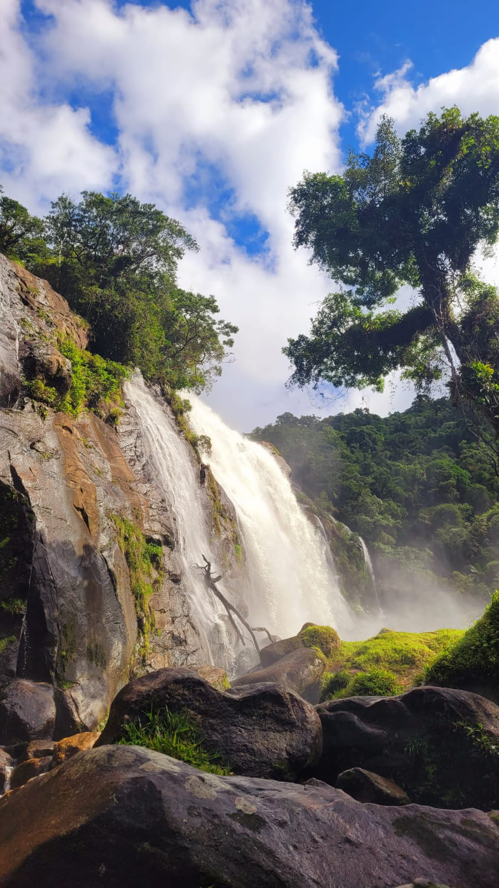
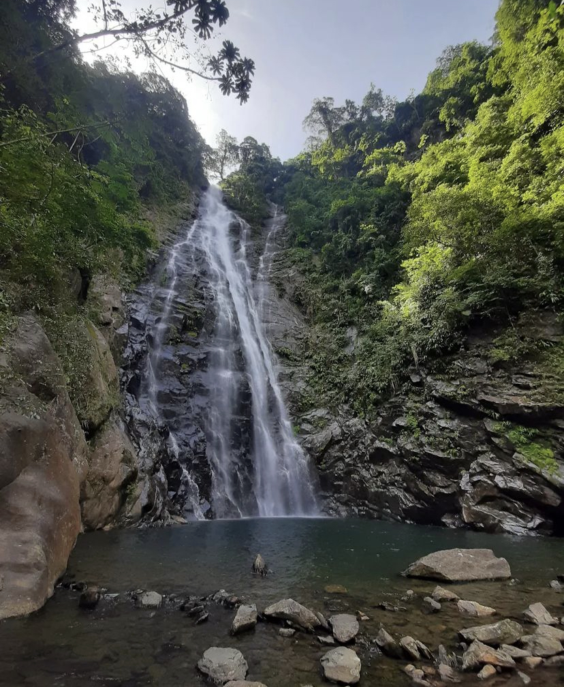

O Rancho da Maioridade ou Casa da Pedra é uma construção localizada na Rodovia Caminho do Mar e que foi construída em 1922 a fim de servir como ponto de descanso aos turistas, assim como o Pouso de Paranapiacaba. A construção ganhou esta nome em homenagem à Estrada da Maioridade.

Cachoeira Elefante
Bertioga
A Cachoeira do Elefante, considerada a maior da região, é a trilha mais antiga do complexo de trilhas do Rio Itapanhaú, no Parque Estadual Serra do Mar – Núcleo Bertioga. Ela leva os visitantes às deslumbrantes Cachoeira do Elefante e Cachoeira do Véu da Noiva, com duração de 4 horas. Com 2,5 km de extensão e nível de dificuldade considerável, a trilha requer monitoria obrigatória. Durante a caminhada, os aventureiros atravessam o Rio Itapanhaú, exploram a história da antiga Rota do Comércio, e desfrutam das belezas da floresta densa.
Lagoa azul
Cubatão
A charmosa e exuberante Cachoeira da Lagoa Azul em Cubatão, litoral de São Paulo, chama a atenção de seus visitantes graças a um poço natural de cor azul, com uma queda de água de, aproximadamente, 30 metros!
A cachoeira é considera uma das melhores do litoral de São Paulo, com poços fundos, é perfeita para um ótimo banho, e para quem gosta de se aventurar um pouco mais, vale um bom mergulho pra explorar os arredores. Pra vc que não sabe nadar, permanece curtindo na parte rasa, com segurança.
Lagoa azul - Poço 2
Cubatão
A charmosa e exuberante Cachoeira da Lagoa Azul em Cubatão, litoral de São Paulo, chama a atenção de seus visitantes graças a um poço natural de cor azul, com uma queda de água de, aproximadamente, 30 metros!
A cachoeira é considera uma das melhores do litoral de São Paulo, com poços fundos, é perfeita para um ótimo banho, e para quem gosta de se aventurar um pouco mais, vale um bom mergulho pra explorar os arredores. Pra vc que não sabe nadar, permanece curtindo na parte rasa, com segurança.
Cachoeira Guariuma
Praia Grande
Localizada no Parque Estadual Serra do Mar - Núcleo Itutinga Pilões - a cachoeira de Guariúma tem 25 metros de altura e é uma boa escolha para as pessoas que estão no litoral paulista e buscam opções além das praias. A trilha, de nível fácil e autoguiada, é ótima também para quem está se inserindo nas trilhas, ou quer passear em família e levar crianças. A caminhada é contemplativa, segue-se o duto de água, vai passando por pontes sob os rios e tem os poços de águas cristalinas aonde alguns é permitido se banhar.
Pedra da Gavea
Rio de Janeiro
Considerado um dos cartões postais do Rio, a Pedra da Gávea é o maior monolito à beira mar do mundo. Com mais de 800 metros de altitude, por sua localização e características, sempre foi uma referência para navegadores. Somente em 1830 as primeiras expedições começaram a ser empreendidas ao seu topo, que, desde então, recebe grande número de visitantes em suas trilhas e encostas rochosas, tornando-se uma referência carioca para a prática do montanhismo. É uma trilha com grau de dificuldade pesado e, aproximadamente, três horas de caminhada, por isso deve ser feita apenas por pessoas com bom preparo físico e acostumadas a caminhadas pesadas e técnicas. Além disso, é sempre bom estar acompanhado de um guia ou caminhante experiente e levar uma corda, equipamentos de segurança, calçados e roupas adequadas. Tanto esforço de exercício é recompensado por uma das mais belas vistas naturais do mundo.

Cachoeira Paraiso
Cubatao
Agora para visitar o local é necessário agendar previamente site da fundação e após isso contratar um guia que cobra R$ 45 reais por pessoa(saiba mais aqui).Logo surgiu nas redes uma informação de que o acesso ao Lago azul e ao Paraíso, duas cachoeiras localizadas próximas a Cota 95 também estariam regularizadas e com a obrigação de guias para sua visitação. Diante disso, nossa reportagem entrou em contato com a Fundação Florestal que emitiu a seguinte nota:
“As Cachoeira da Lagoa Azul e Paraíso estão inseridas nas delimitações do Núcleo Itutinga Pilões e seguem na condição de uso público proibido. Não há previsão de estruturação e posterior liberação.
Nossas equipes de fiscalização em conjunto com a Polícia Militar Ambiental realizam operações frequentemente no intuito de autuar no descumprimento do Art. 70 da Resolução SMA 48/2014 em regulamentação à Lei Federal 9.605/98 no qual prevê; multa de R$ 1.000,00 à 10.000,00.“
Véu da noiva
Cubatao
O Parque Ecológico do Perequê está localizado na Serra do Mar no município de Cubatão e a área deste Parque termina na cerca logo após a bica. A partir dessa cerca se inicia o Parque Estadual da Serra do Mar Núcleo Itutinga Pilões. As cachoeiras desta caminhada estão no Parque Estadual.
Lembrando que é necessário a contrataçao de um guia do Parque para fazer o passeio.